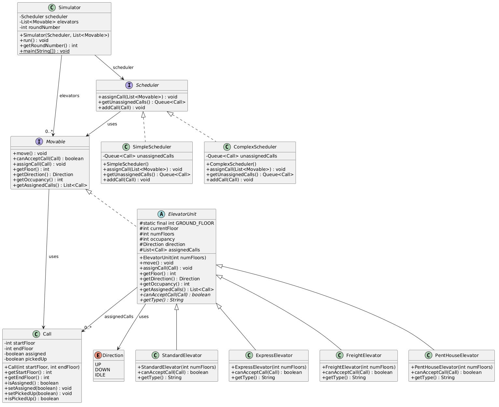
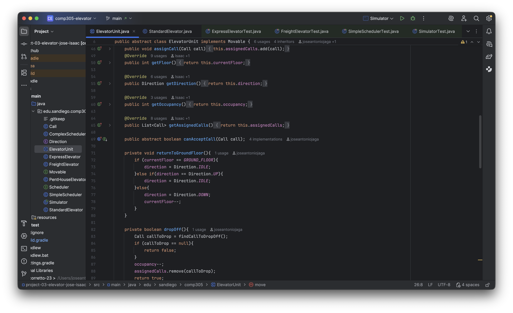

Jose
Gonzalez
CS student at USD with a minor in Finance. At Mid-West Textile I turned a daily Excel process into an automated HTML + SQL system and built 10+ reports to streamline warehouse operations. At Incode Technologies I tested web and mobile apps on Android and iOS, working directly with engineers to resolve bugs and improve UX.
joseantoniogonz2004@gmail.com · +52 639 465 7011
Tennis, snowboarding, and hanging out with friends.
Projects


Elevator Simulator
Overview
Built an elevator simulator in Java that runs a round-by-round simulation of different elevator types servicing calls in a building. The program reads calls from a CSV file and uses a scheduler to assign them to the right elevator based on its type and rules.
Design
Designed the project using OOP principles — an abstract class for shared elevator logic, interfaces for polymorphism, and separate classes for each elevator type (Standard, Freight, PentHouse, Express). Each class has a single responsibility following SOLID principles.
My Contribution
I worked on fixing bugs in the CSV parser, correcting the scheduler logic, and improving the Express elevator's direction validation. Used GitHub branches and pull requests for all changes.
What I Learned
This project helped me get better at debugging, writing clean code, and collaborating through GitHub.
Contact Me
joseantoniogonz2004@gmail.com